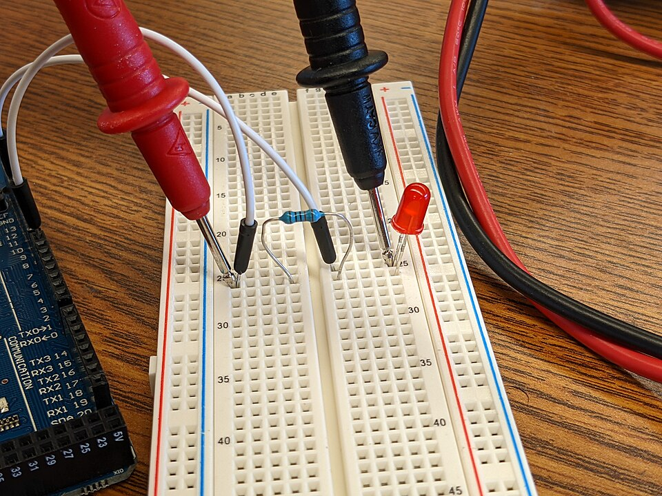

Commission a complete low-voltage sensor and alarm
Combine a loaded source, analog filter, threshold and visible output in one circuit, then locate a hidden fault using the first bad measurement.
Give each stage a test point
Use the isolated 5 V, 30 mA bench setup and SN74HC14 DIP wiring from P110 · See a bouncing switch and clean up a digital edge. Use its first two inverters in series. Build a 10 kΩ pot across 5 V and return. Feed its wiper through 10 kΩ to FILTER, with 1 µF and a 1 MΩ pulldown in parallel to return. Connect FILTER to the first inverter and the first output to the second input. Connect the second output to a low-current LED through 2.2 kΩ to return. Use a red LED and check polarity. Label supply, wiper, FILTER, first output and LED output. Measure with a common return at the isolated trainer only.
At each end of pot rotation, pause for the filter to settle and verify the two output states. Then move through the middle slowly in each direction and record the two points where the LED changes. The supply feeds the logic, the potentiometer supplies the input and the two outputs are independent places to test.

Photo by Zeroping, with on-page callouts. Original photo · CC BY 4.0.


Photo by Severino666, with on-page callouts. Original photo · Public domain.

Tektronix prepares the probe used for the AC and timing checks.
Compare DC, AC amplitude and switching thresholds
On the same circuit, record the stationary midpoint with a DC-coupled scope. Use the P25 · Measure an RC filter on the oscilloscope signal-generator setup on a separate copy of the 10 kΩ/1 µF filter. Drive a sine centred at 2.5 V, 1 V peak-to-peak measured at its input, staying within the rails. On generators with selectable load settings use high impedance or verify the actual amplitude with the scope. Compare 5 Hz and 50 Hz on the same channels. The nominal corner is about 16 Hz and the 50 Hz signal should be visibly smaller. AC coupling suppresses the displayed DC level; set it back to DC before judging switching thresholds.
Troubleshoot a hidden change
Power off and ask a partner to change one thing. They can disconnect the wiper lead, disconnect the capacitor, or reverse the LED. The 1 MΩ pulldown keeps the logic input defined if the wiper lead is disconnected. Record the normal supply, test in chain order and mark the first reading that differs. After repair prove both steady endpoints and repeat the dynamic test. Bring this record to P111 · Commission one complete air-handler sequence for the same input, decision and output chain on a building trainer.